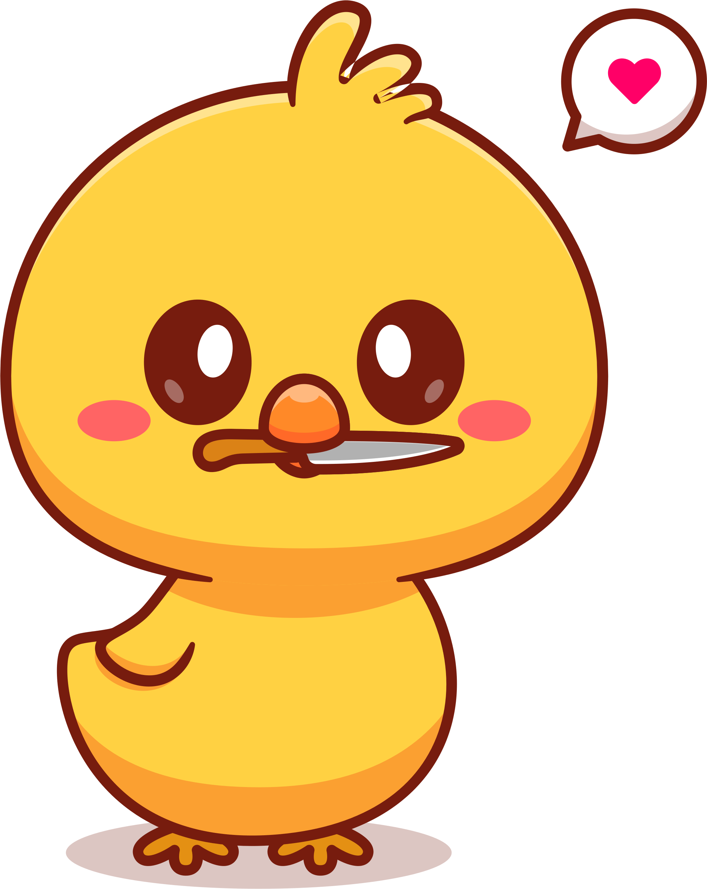
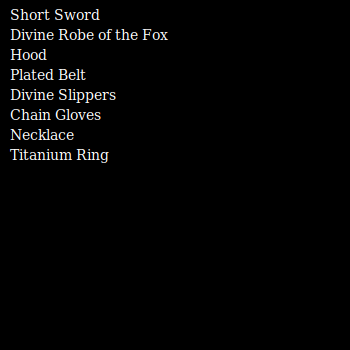
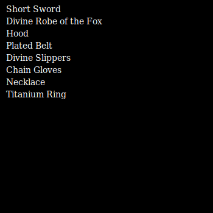

NFTs - Agora com Penas!
Por 45 Mil Dólares, Você Também Pode Ter um QUAC de Prestígio! 🦆💸
Você se lembra de quando a arte era sobre a paixão, a técnica e, bom, alguma coisa real? Bem, esqueça isso! Agora, a arte é sobre Rodriguinho, um pato pixelizado que faz quac-quac no blockchain. Como a evolução da arte é fascinante, não é mesmo?
Compre o Rodriguinho Saiba maisO que diabos são NFTs?
 

As NFTs, ou Tokens Não Fungíveis, revolucionaram a forma como percebemos e comercializamos arte, mídia digital e até mesmo patos! Uma NFT é única, garantindo propriedade e autenticidade para seu detentor. E é exatamente isso que torna a NFT de Rodriguinho tão especial
Sobre nós ContatoAinda não está convencido? Para ser honesto, nós também não. É por isso que estamos vendendo, não comprando.